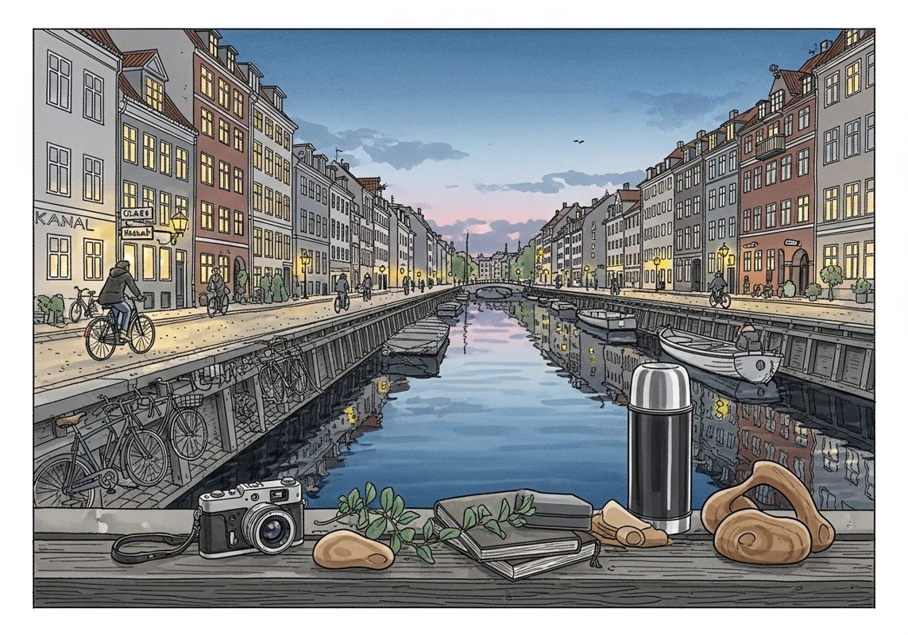

7/27

今日更新
David Heinemeier Hansson (DHH), Co-founder of 37signals
来源：David-Senra
原链接：https://www.davidsenra.com/episode/david-heinemeier-hansson
状态：已读完整音频 transcript
这期播客深入探讨了37signals联合创始人DHH（David Heinemeier Hansson）在产品开发、团队管理和个人工作哲学上的核心理念，特别是他如何通过拥抱限制、追求极致简洁和提供“厨师之选”式的产品来创造价值。它适合所有希望理解如何构建长寿、有影响力产品，以及如何在日益复杂的数字世界中保持专注和高效的创业者、产品经理和开发者。
- 极致的简洁与“杀掉你的宝贝”：DHH首先强调了简洁的重要性，这贯穿了他从写作到产品开发的整个生涯。他回忆起《Getting Real》一书的章节只有半页甚至三段，而《Rework》初稿被他与Jason Fried砍掉一半，从5万字精简到2.5万字。这种对简洁的执着也体现在产品上，Basecamp在2004年推出时的口号就是“更少的软件”（less software），旨在与微软Project等臃肿的企业工具形成对比。DHH认为，Basecamp的成功在于它功能少、易学易用。然而，随着AI加速开发，实现功能变得异常容易，这反而让坚持简洁原则变得更难。他以Basecamp 5的开发为例，指出团队在AI辅助下能快速完成大量功能，但最终仍需“杀掉自己的宝贝”，砍掉那些虽好但会增加产品复杂性的功能，以确保核心卖点——易用性——不被稀释。他认为，客户口中的“简单易用”才是真正的价值所在，而非开发者自诩的口号。
- 拥抱限制：小团队的竞争优势：DHH对“拥抱限制”有着深刻的理解。他坦言不信任自己或团队在没有限制的情况下能做出好产品。他认为，时间、金钱和人力的不足，正是迫使团队进行严格选择和聚焦的关键。Basecamp的第一个版本仅用了380小时开发，因为DHH每周只有10小时投入。这种极端的限制反而成就了产品的精良。他从未担心微软这样的大公司会复制Basecamp，因为大公司庞大的组织结构决定了他们只能生产需要5万人才能完成的臃肿软件。DHH真正担心的是由两三人组成的精干小团队，因为他们与37signals面临相似的限制，更有可能创造出具有竞争力的简洁产品。在AI时代，小团队能发挥出更大公司的效能，这使得DHH对“限制”的依赖和警惕性更高，他认为保持这种“漏斗”般的约束，才能迫使团队从一百个需求中只选择三四个最关键的来做，并确保它们做到极致。
- 软件的“成品”与用户的“打印机”心态：DHH提出了一个引人深思的观点：软件也应该像物理产品一样，有“完成”的那一刻。他羡慕刀具、电影或音乐专辑等物理产品，一旦发布就基本定型，无需频繁更新。他以自己钟爱的Brother HL 2340DW打印机为例，它功能单一（黑白打印、扫描），但稳定可靠，满足了他十年如一日的需求。DHH认为，许多Basecamp用户也持有这种“打印机心态”：他们找到一个能解决特定问题的工具，就不希望它频繁变动。37signals为此采取了独特策略：他们重写了Basecamp三次，但保留了旧版本。例如，2004年推出的Basecamp版本，虽然在2010年停止销售，但至今仍有客户在使用，并为公司带来数百万美元的利润。这些老用户对新功能不感兴趣，他们喜欢的是那个“旧的、有点缺陷但已熟悉”的产品。DHH指出，虽然这有其局限性（可能阻碍新客户），但它满足了部分用户对稳定性和熟悉度的深层需求，也证明了“完成的软件”的价值。
- 远程工作与“建造者模式”：DHH是远程工作的坚定倡导者，早在2013年就出版了《Remote》一书。他强烈反对开放式办公室，认为其持续的打扰会扼杀创造力和生产力。他引用Paul Graham的“建造者模式”（builder mode）概念，指出对于开发者而言，一天中哪怕只有几次打断，也会让这一天变得毫无效率，因为他们无法进入深度专注的“心流”状态。DHH需要至少四小时的无干扰时间才能真正解决复杂问题。他个人是典型的内向者，大部分时间喜欢独处，甚至在37signals每年两次的团队聚会后，他都会感到精疲力尽，宁愿隐居森林也不愿每天在办公室工作。他认为，自己的职业生涯之所以能腾飞，正是因为他学会了关闭房门，长时间不受打扰地工作。这种对专注环境的极致追求，甚至延伸到他的办公桌，必须保持整洁，因为任何杂乱都会分散他的注意力。
- 从Mac到Linux：对极致体验的追求：DHH分享了他从Mac用户转变为Linux拥趸的经历。他曾是Mac的忠实粉丝，欣赏其设计和软件质量。然而，苹果公司的一些决策让他感到不满，促使他寻找替代品。在尝试Windows失败后，他转向了Linux。最初，他对Linux的审美和用户体验感到失望，认为它像“廉价的Windows复制品”。然而，Reddit上的r/unixporn社区让他大开眼界，看到了极客们如何通过数百小时的个性化配置，将Linux打造成电影中黑客界面般酷炫、高效的系统。他特别提到一位22岁的波兰开发者Backsfree，他开发的平铺式窗口管理器Hyperland，让DHH意识到Linux可以通过键盘驱动，实现比Mac更极致的生产力。这个发现让他坚信，即使是市值万亿美元的科技巨头，也可能被一个匿名开发者用开源工具超越，因为后者能提供更深度的定制和控制。
历史精选
Capital-Efficient Growth (with Zoom CEO Eric Yuan & Veeva CEO Peter Gassner)
来源：Acquired
状态：已读音频详细听记
本期播客深入探讨了Zoom创始人兼CEO袁征和Veeva Systems创始人兼CEO彼得·加斯纳如何以极低的资本投入，通过卓越的产品、客户至上和独特的商业策略，构建出数十亿美元市值的科技巨头。这期节目对于希望理解资本效率增长、产品驱动型创业以及如何在竞争激烈的市场中脱颖而出的创始人、投资者和科技从业者极具启发性。
- 引言：两位传奇CEO的资本效率增长秘诀：本期《Acquired》播客揭示了硅谷顶级风投公司Emergence Capital CEO峰会的内部对话，邀请到Zoom创始人兼CEO袁征（Eric Yuan）和Veeva Systems创始人兼CEO彼得·加斯纳（Peter Gassner）分享他们的创业智慧。两位嘉宾的公司都以惊人的资本效率著称：Veeva仅筹集了400万美元（且未完全使用），便发展成为年收入20亿美元、利润丰厚的企业；Zoom在获得3000万美元和1亿美元融资后，也几乎未动用这些风投资金，同样实现了20亿美元的年收入和30%的利润率。播客的核心主题是“资本效率增长”，探讨如何在极少资本投入下实现快速扩张，这对于所有寻求可持续发展的创业者都具有重要价值。
- 逆流而上的融资历程与“非显而易见”的市场洞察：两位CEO的融资之路都充满挑战。彼得·加斯纳在2008年金融危机期间筹集了400万美元，环境异常艰难。袁征的经历更为坎坷，他创立Zoom时，最初7个月没有VC愿意投资，最终通过朋友筹集了300万美元种子轮和600万美元A轮。当时，大多数VC认为视频会议市场已是“过时的前沿”，或是一场“价格战”，对Zoom的项目不屑一顾。袁征的坚持源于他坚信现有产品（如Webex）体验糟糕，市场需要更好的解决方案。他强调，创业者必须选择一个“大多数人认为会失败”的市场，才能成为“局外人”，从而发现巨大的非显而易见的机会。
- 资本效率的核心：产品卓越、客户至上与“盈利柠檬水摊”心态：播客指出，资本效率并非仅仅是商业模式问题，更是一种“心态和文化”。袁征将其比作经营一个“盈利的柠檬水摊”，强调现金流带来的“安全感”和业务价值。两位CEO都将“产品卓越”和“真正专注”视为核心。袁征认为，任何与产品或客户无关的事情都是“废话”。在客户洞察方面，袁征强调要倾听客户的“感受”而非“言语”，即使客户说满意，也要深挖其真实需求。彼得·加斯纳则凭借曾是Webex早期投资人的经验，深知现有解决方案的痛点，坚信能提供更好的产品。
- 精兵简政的早期运营与客户获取策略：Zoom的早期团队构成极具特色：最初的40人中，有39位是工程师，没有专门的市场营销或销售人员。袁征身兼多职，甚至亲自组装家具。公司在成立前四年几乎没有市场营销团队，直到2015年才开始组建。Zoom的病毒式增长始于《华尔街日报》的一篇报道，一夜之间带来5万用户，虽然大部分流失，但留下的核心用户通过口碑传播形成网络效应。Veeva的客户获取则依赖于彼得·加斯纳的亲自销售和对客户关系的投入。他通过与辉瑞等大型客户的竞争，凭借“更好的人、更努力的工作、对卓越的渴望”赢得合同，并强调客户的付款直接用于产品开发，这相当于一轮无稀释的融资。
- 商业模式的智慧：不锁定客户，追求长期价值与持续创新：袁征反思，公司最大的挑战在于在线业务的低预测性，而企业级业务模式更优。彼得·加斯纳分享了Veeva一个“反直觉”的策略：不与客户签订多年期合同，而是专注于优化每位客户的年均价值。他解释说，锁定客户可能导致公司变得懈怠，降低长期价值。这种策略在Veeva所处的生命科学垂直领域尤为有效，因为它能确保公平性，并激励公司每年都在业务中盈利。这种模式将资本效率转化为高运营利润率和现金流，并促使公司持续创新，避免傲慢。
Informa: Where Industries Meet - [Business Breakdowns, EP.192]
来源：Business Breakdowns
原链接：https://joincolossus.com/episode/informa-where-industries-meet/
状态：已读网页 transcript
Informa作为一家在媒体领域独树一帜的公司，其深度纪要揭示了传统展会与出版业务如何通过资本轻量化运营、战略性并购和对第一方数据的重视，成功应对数字化转型和疫情冲击。这份纪要适合对媒体行业、B2B服务、资本配置策略以及传统业务转型感兴趣的投资者和商业人士。
- Informa：媒体界的“隐形冠军”：Informa被播客主持人Matt Reustle誉为媒体领域最有趣的公司，但却鲜少被投资者关注。其核心业务是全球领先的现场活动（如贸易展会和专业会议），辅以学术与专业出版业务（Taylor & Francis），近期更通过与TechTarget的合并，积极布局B2B第一方数据。这种多元而又协同的业务组合，使其在传统媒体向数字化转型的浪潮中，展现出独特的韧性和增长潜力。投资者往往低估了优质行业展会的价值，而Informa正是这类“特殊资产”的集大成者，其商业模式值得深入剖析。
- 现场活动：疫情后的强劲复苏与独特经济学：Informa的现场活动业务是其基石，尽管在COVID-19疫情期间遭受重创，但其复苏速度和韧性超出了许多人的预期。播客嘉宾Nick Shenton指出，优质的行业展会并非“平淡无奇”的会议，而是连接行业、促成交易、分享知识的关键平台。其经济模型具有资本轻量化的优势，主要收入来自参展商和观众的费用，运营成本相对可控。疫情迫使Informa加速数字化转型，但同时也凸显了线下交流的不可替代性。成功的展会能建立强大的网络效应和品牌护城河，使其在特定垂直领域拥有垄断地位，从而带来稳定的现金流和增长潜力。
- 出版业务：Taylor & Francis的价值与数字化挑战：Informa的另一大支柱是其学术与专业出版部门Taylor & Francis，这部分业务与哈佛商业评论出版等模式有异曲同工之妙。它通过出版高质量的学术期刊、书籍和研究报告，服务于全球的学者、研究人员和专业人士。尽管出版业面临着数字化转型和开放获取（Open Access）模式的冲击，但Taylor & Francis凭借其深厚的学术积累、品牌信誉和庞大的内容库，依然保持着强大的市场地位。其价值在于对专业知识的策展和传播，以及由此产生的订阅收入和版权费用。然而，如何平衡传统出版与数字订阅、如何应对盗版和新兴内容平台的竞争，是其持续面临的挑战。
- 战略性布局：TechTarget与B2B第一方数据：Informa近期与TechTarget的合并，标志着其在B2B第一方数据领域的雄心。TechTarget是一家专注于技术买家意图数据的公司，通过其内容平台和数据分析，帮助技术供应商精准触达潜在客户。这一战略举措旨在将Informa庞大的展会和出版用户数据与TechTarget的意图数据相结合，构建一个更全面、更精准的B2B营销和销售解决方案。这不仅能为Informa带来新的增长点，也使其从传统的媒体和活动提供商，转型为数据驱动的商业智能服务商，从而提升其在数字经济时代的竞争力，并创造更高的客户价值。
- 财务表现、资本配置与风险：播客中提及了Informa的营收构成和财务表现，强调其资本轻量化的运营模式带来的良好现金流。在资本配置方面，Informa展现出积极的并购策略，嘉宾Nick Shenton甚至将其与奢侈品巨头LVMH的策略相提并论，即通过持续收购优质资产来巩固市场地位和扩大业务版图。这种策略要求公司具备卓越的整合能力和对行业趋势的深刻洞察。然而，现场活动业务的周期性、出版业的数字化压力以及并购整合的风险，都是Informa需要面对的挑战。有效的风险管理和持续的创新是其保持长期成功的关键。